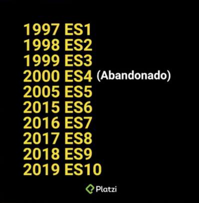

ECMAScript es una especificación de lenguaje de programación con la que trabaja JavaScript. Ecma International está a cargo de estandarizar este lenguaje de programación, a través de una serie de versiones que añaden funcionalidades nuevas.
La historia del primer navegador web empieza desde la necesidad de comunicar varias computadoras, a través de los siguientes acontecimientos:
La guerra de los navegadores surge por la necesidad de las empresas de acaparar con el mercado de la web. En la primera guerra de navegadores, entre 1995 y 2001, se enfrentaron Netscape y Microsoft para posicionar comercialmente su propio navegador.
Incluso llegaron a hacerse bromas muy pesadas, como llevar el logo de Internet Explorer a las oficinas de Netscape. A partir de esta guerra surgieron nuevas tecnologías que perduran hasta la actualidad.
A partir de 1997, ECMA empezó a lanzar versiones para estandarizar el lenguaje. Alguna abandonada, como la ES4.
A partir de 2015, con ECMAScript 6, fue un antes y después para el lenguaje. Se incluyen varias funcionalidades que situaron a JavaScript como uno de los mejores lenguajes de programación.
A lo largo de este curso aprenderás nuevas características de JavaScript. Sin embargo, puede que el navegador en el que trabajes no la soporte, esto por el mismo hecho de ser algo nuevo.
Cada navegador web tarda un tiempo en aplicar las nuevas características de ECMAScript. Esto quiere decir, que si utilizas una funcionalidad nueva, el navegador no las procese y colapse tu programa.
Como buena práctica te recomiendo el sitio web Can I use?, que muestra qué funcionalidades añadidas por ECMAScript están soportadas por cada navegador.
Esto es relevante para conocer qué puedes aplicar o qué no en tu código. También sirve para enfocarte en qué navegadores están tus clientes objetivo, y el producto entregado esté correcto para ellos.
TC39 es un grupo de desarrolladores, académicos y hackers que están a cargo de revisar cada nueva propuesta o funcionalidad que cumpla con el estándar. El estándar es una serie de pasos que la nueva propuesta sigue para publicarla en la alguna versión de ECMAScript a futuro.
En la página de TC39 puedes revisar qué nuevas propuestas existen y en qué etapa están.